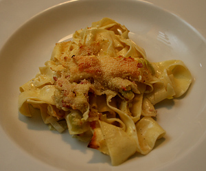

Lauch-Pastaauflauf
5 von 6500 g breite Nudeln al dente kochen, abtropfen und beiseite stellen. Zwei Stangen Lauch fein schneiden und mit einer Zwiebel andämpfen. Mit Weisswein ablöschen. Salz, Pfeffer sowie ca. 2 Dl Rahm dazugeben, mit den Nudeln vermengen. Ein einer Auflaufform mit viel Sprinz überbacken.
